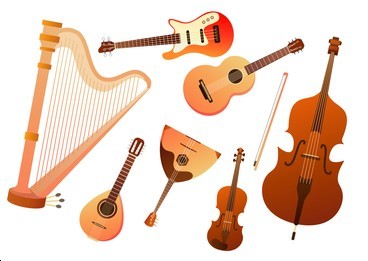
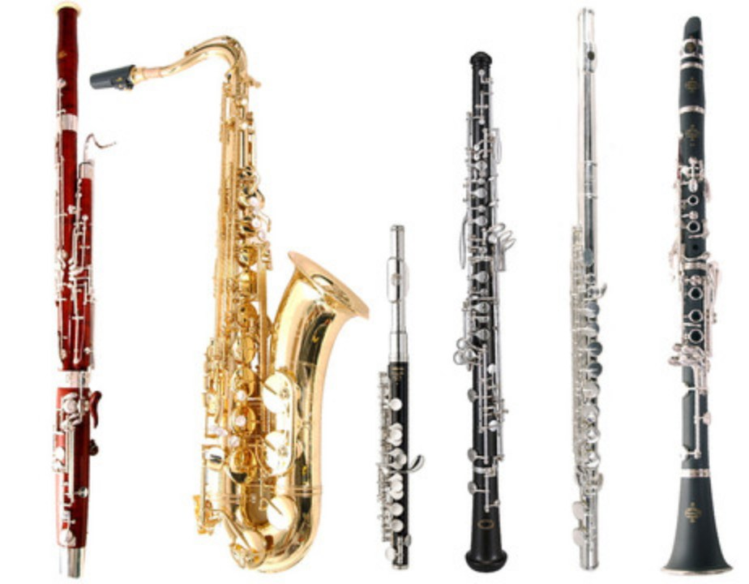
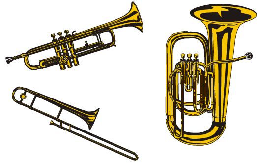
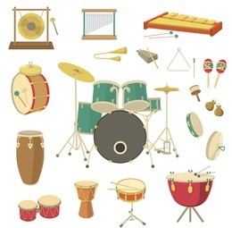

Instruments
Musical instruments are tools created to make sounds to be used in creating music. It is also designed with a purpose in mind. There are four types of musical instruments: string instruments, woodwinds, brass instruments, and percussion. The sound produced by an instrument can be affected by many factors, including the material from which the instrument is made, its size and shape, and the way that it is played. Musical instruments have been used since earliest times for a variety of purposes, ranging from the entertainment of concert audiences to the accompaniment of dances, rituals, work, and medicine.

String Instruments
String instruments are musical instruments that use strings in order to produce a sound. It could be by strumming, plucking, or by using a bow.
Examples of string instruments: Guitar, Violin, Piano, BanjoWoodwind Instruments
Woodwinds instruments are musical instruments that could produce sound by blowing air through it while controlling it using the holes or keys on the body of the instrument which causes different sounds.
Examples of woodwind instruments: Clarinet, Oboe, Flute, Saxophone
Brass Instruments
Brass instruments are musical instruments that are usually long cylindrical or metal tubes that are curved. It produces sound by the vibrations of the player’s lips against the mouthpiece. It has valves or a slide which helps to produce different tones.
Examples of brass instruments: French Horn, Trumpet, TrombonePercussion Instruments
Percussion instruments are musical instruments that produce sounds by striking, shaking, rubbed, or scraping the surface. You could use your hands, a stick, or a mallet.
Examples of percussion instruments: Snare Drum, Xylophone, Tambourine, Chimes